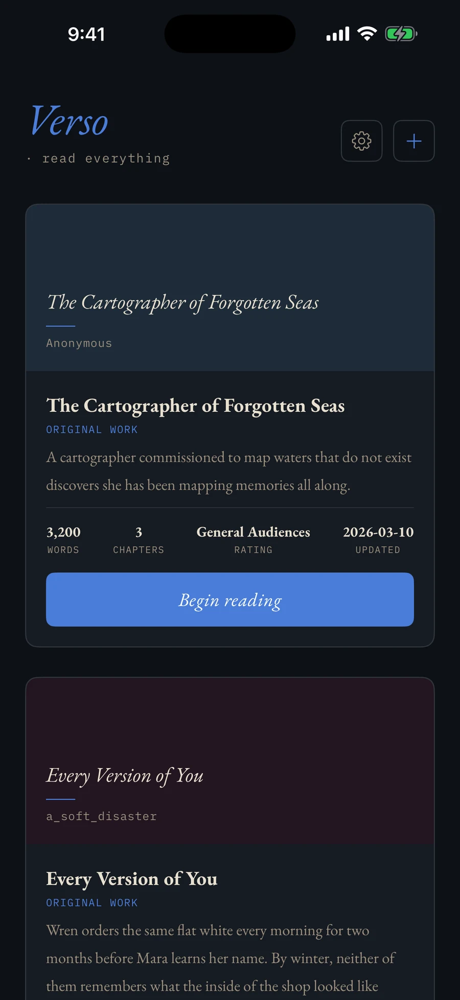
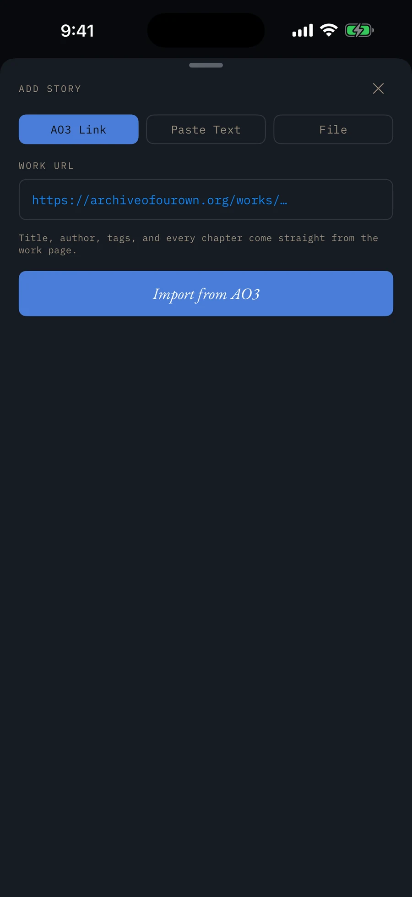
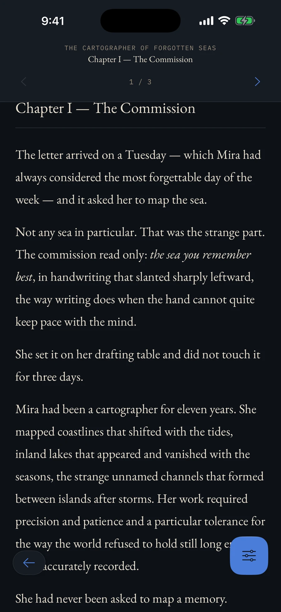
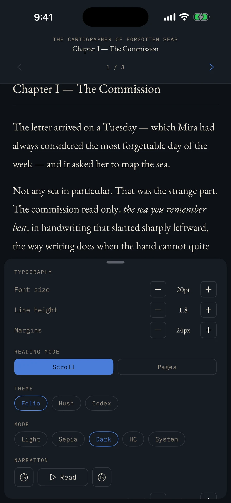
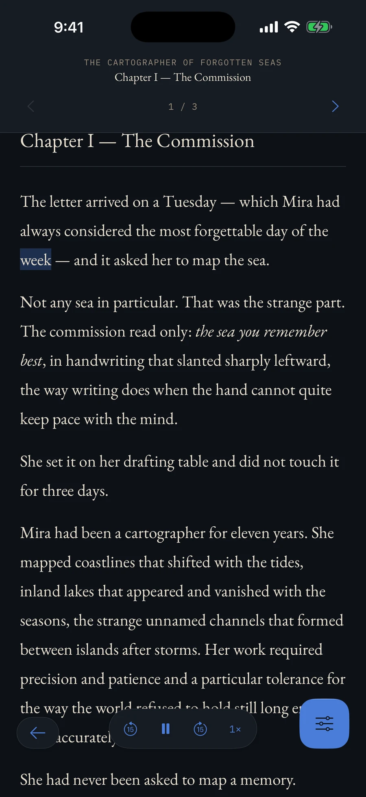
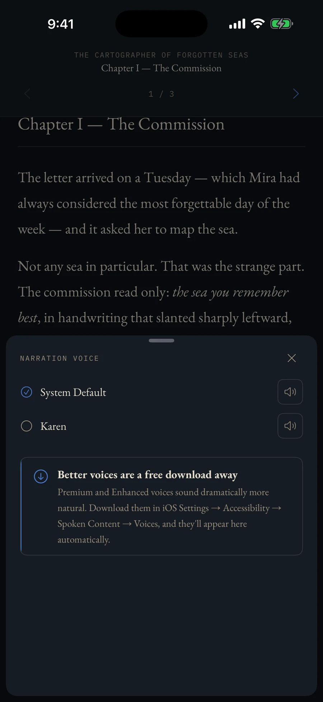

AO3 works, EPUBs, and pasted text in one library, with word-synced narration that keeps playing on the lock screen. Prototyped in React Native; shipped as native SwiftUI.
AO3, EPUB, or pasted text in; one library. Three themes × four modes. On-device TTS with word-level highlight and lock-screen playback. Rebuilt from Expo to SwiftUI when narration outgrew the abstraction; Android deferred.
Three equal import tabs: AO3 Link, Paste Text, File. An AO3 URL brings title, author, tags, and every chapter. Cards show words, chapters, rating, last updated.



Theme = typography: Folio, Hush, Codex. Mode = luminance: Light, Sepia, Dark, HC, System. Separate axes — twelve combinations, and high contrast works in any theme.
| Light | Sepia | Dark | HC | |
|---|---|---|---|---|
| Folio | ● | ● | ● | ● |
| Hush | ● | ● | ● | ● |
| Codex | ● | ● | ● | ● |
Size, line height, margins: steppers, not sliders.

Narration must survive backgrounding, take lock-screen controls, and highlight the spoken word — which needs word-boundary callbacks the cross-platform speech API does not expose.
expo-speech
Proved the reading experience.
No pause/resume, rate changes, or word-boundary callbacks. Replaced with a custom module wrapping AVSpeechSynthesizer.
Custom modules cannot run in Expo Go; testing moved to dev builds.
Deferred until it gets its own native module — no degraded fallback.
SwiftUI, AVFoundation, MediaPlayer — zero third-party dependencies. Narration runs with the device locked, with Now Playing controls and ±15s skip.
Bought: word-synced highlight, podcast-grade background playback, zero dependencies. Cost: Android, and a second build.

iOS ships thin default voices; the better ones are free but buried. The picker names the limit and gives the path — Settings → Accessibility → Spoken Content → Voices — and previews every voice.

No sign-in, no analytics, no recommendations. Network only fetches AO3 works you request; narration is on-device; fully offline after import.
Unofficial AO3 reader. Rated 17+ because import allows adult content.
1.0 (4) rejected under Guideline 2.5.4: background audio declared, nothing played in review. Sample content was #if DEBUG, so Release builds launched to an empty shelf. Fix: sample story in every build, review notes, a screen recording. 1.0 (5) passed.
Free. iPhone. No ads, no accounts, no tracking.